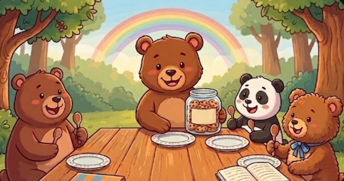
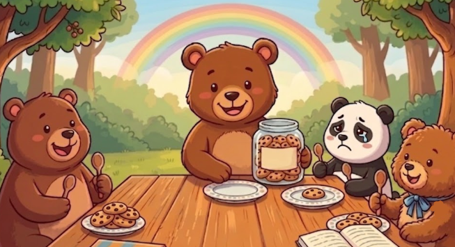
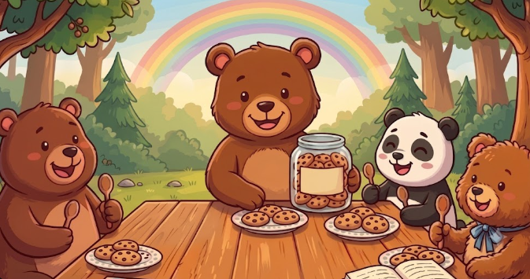
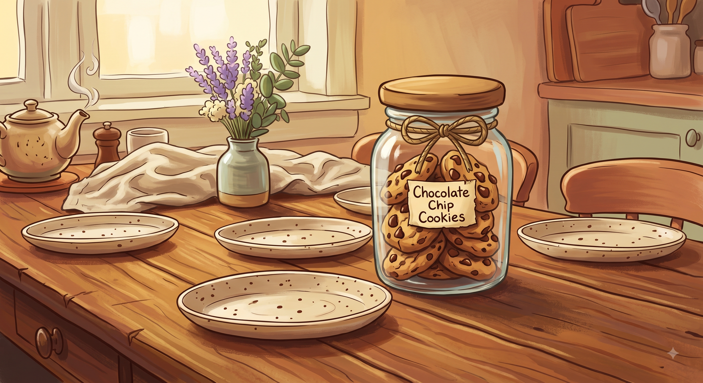
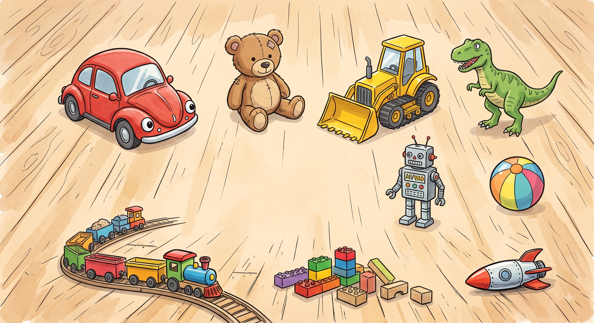
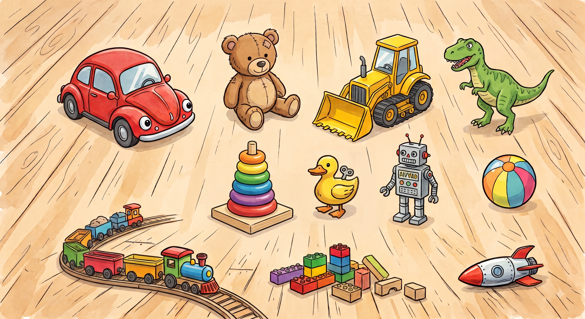

Koko Beruang sedang mengadakan pesta teh di rumah pohonnya. Ada 3 temannya yang datang berkunjung,
sehingga total ada 4 beruang di pesta tersebut.
Koko mengeluarkan 1 toples penuh berisi 12 keping kue kering cokelat.
Koko ingin membagikannya secara adil ke dalam 4 piring.
Pertanyaan: Apa tantangan yang sedang dihadapi Koko?
Jawab: Koko ingin membagi kue kepada teman-temannya secara merata adil
Pertanyaan: Bagaimana caranya kita membantu Koko?
Jawab: Menghitung berapa kue Koko, lalu menghitung berapa piring yang ada.
Pertanyaan: Ada lagi cara yang lain?
Jawab: Mari kita cari tahu di langkah selanjutnya!
2: Mengenali Petunjuk (Clues)
Mari kita amati benda-benda yang ada di meja Koko:

🔍 Scroll / cubit dua jari untuk zoom, geser untuk pan
Benda 1: 1 Toples berisi 12 Kue Kering
Benda 2:4 Piring Kosong (untuk 4 beruang)
Bagaimanakah langkah pertama yang harus dilakukan Koko untuk memindahkannya? Apakah dibagi asal saja? Atau dibagi teratur?

🍪 Dibagi AcakKue diletakkan sembarangan

🍪 Dibagi RataSetiap piring mendapat sama
3: Konsep Berbagi Adil (Fair Sharing)
Cara paling aman agar semua mendapat bagian yang sama adalah dengan membagikannya
satu per satu secara bergiliran sampai kue di toples habis.
Simulasi Alur Pengurangan Berulang:
Putaran 1: Ambil 4 kue, taruh di piring A, B, C, D → Sisa: 8 kue
Putaran 2: Ambil 4 kue lagi, taruh di piring A, B, C, D → Sisa: 4 kue
Putaran 3: Ambil 4 kue terakhir → Sisa: 0 kue
Ayo, dicoba!
4: Eksperimen Virtual Manipulative
Toples (9)
5: Refleksi Pembelajaran
Refleksi 1: Apakah cara membagi satu per satu (fair sharing) berhasil memecahkan masalah Koko?
Jawab: Ya, karena seluruh piring terisi sama banyak tanpa ada yang iri!
Refleksi 2: Mengapa tidak menaruh kue secara acak?
Jawab: Jika acak, pembagian tidak adil (ada yang dapat sedikit, ada yang banyak).
Pertanyaan Kritis (Tingkat Lanjut): Bagaimana jika Koko punya 13 kue untuk 4 beruang?
Jawab: Akan ada sisa 1 kue di toples yang tidak bisa dibagi rata (Pengenalan konsep Sisa Pembagian).
🥳🎈🐻🍪✨
Hore! Pesta Teh Koko Sukses Besar!
Kamu hebat telah menguasai konsep pembagian dengan adil! High-five dulu! ✋
6: Cek Pemahaman (Kuis)
Ayo uji pemahamanmu! Jawab 3 soal berikut satu per satu.

Soal 1: Ada 10 kue yang akan dibagi rata ke 5 piring. Berapa banyak kue pada setiap piring?

Soal 2: Ada 9 mainan tergeletak di lantai. Setiap keranjang hanya dapat memuat 3 mainan. Berapa keranjang yang diperlukan supaya semua mainan masuk ke keranjang?

Soal 3: Ada 11 mainan tergeletak di lantai. Setiap keranjang hanya dapat memuat 3 mainan. Setelah keranjang-keranjang terisi penuh, berapa mainan yang tidak dapat masuk ke keranjang?
🌟 Kerja bagus! Kamu sudah menyelesaikan semua soal Cek Pemahaman. 🌟